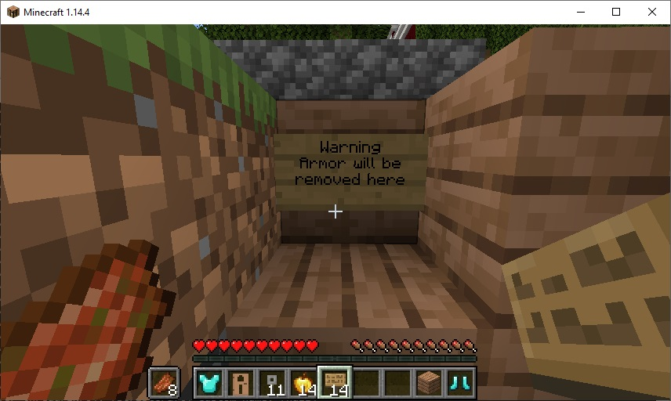

Maze Upgrade, Remove Armor
Sometimes the only way through a room is by using an over-powered piece of armor
This armor should be used up otherwise the player could complete all the rooms easily
At the exit of a room you can place an optional sign to warn the player

This code will remove a player's armor when they move over a set location: